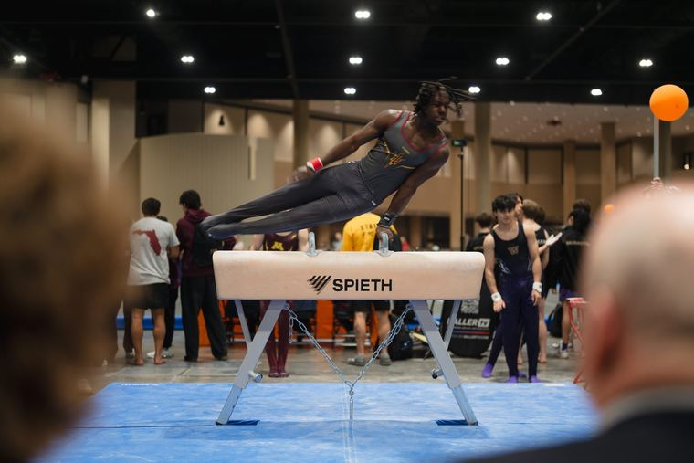

Mark animations (ready to use)
assets/animation/ holds UCG's animated mark loops as MP4: the burst mark performing a skill (back flip, back handspring tuck, pommel horse, trampoline, synchro trampoline, uneven bars dismount, the three disciplines) plus an icon sequence. Each comes in:
_square(1:1),_vertical(9:16, Reels/Stories),_wide(16:9), some with_reelcuts_navy(Light Blue mark on a Navy background) and_light(Navy mark on a Light Blue background)
Use them as intros, outros, transitions and loading moments. Transparent-background (alpha .mov) and GIF versions exist in the UCG brand toolkit for editors who need to composite.
The animations
Videos play when they scroll into view. Downloads: square, vertical (9:16), wide (16:9), in navy or light.
Reels and short videos
- Format: 1080 × 1920, 30 fps. Keep text inside the center safe area (roughly 120px from the sides, 250px from the top, 380px from the bottom, where Instagram's UI sits).
- Type: Greed Condensed (licensed UCG volunteers; UCG's Greed license covers social video including Reels) or Saira Condensed Bold for titles, ALL CAPS; Suisse Intl or Arial for captions and small text. Burned-in captions on every spoken video.
- Color: Navy, Dark Blue Green or Blue Green backgrounds; White, Light Blue or Golden Yellow type on dark; Navy type on light. Same AA (the standard level of WCAG, the Web Content Accessibility Guidelines. In short, text needs a contrast ratio of at least 4.5:1 against its background, large text 3:1) contrast rules as everything else, on every frame. When a background changes color mid-transition behind an element of the same color, render the element twice (one per background) so there's never a same-color frame.
- Footage: real UCG events. B&W footage with White type, or a duotone / color overlay in Navy or Dark Blue Green with the light end dark enough for White text to stay at 4.5:1. Avoid footage showing old NAIGC branding.
- Structure: hook in the first second (a big headline or a striking skill), one idea per screen, numbers before → after, end card with the mark animation, the next step and
@unitedclubgymnastics. - Motion: confident and athletic. Section titles can slam in with a single overshoot; reading holds stay still (no slow drifts or bobbing); the next beat starts as soon as the last one settles. The mark and icons can tumble and flip (that's what the mark animations do).
- Music: licensed or platform library tracks only.
Reel safe area
- Shaded: where Instagram's buttons and captions sit. Keep text out of it (about 250px top, 380px bottom, 120px sides at 1080 × 1920).
- Titles in Saira or Greed caps, White on a darkened photo.
- Burned-in captions on every spoken video.
Example content.
Livestream and broadcast graphics
Lower thirds, scoreboards and overlays for Nationals or meet streams: Navy bars with White / Light Blue text and a Blue Green accent rule, mark at small size. Use Saira Condensed + Arial here, since UCG's Greed license doesn't include the broadcast "Video" tier.
Lower third and score bug

Jordan Lee
Example Club · MAG pommel horse
 13.450
13.450Saira Condensed + Arial, Navy bars, Blue Green accent. Example content.